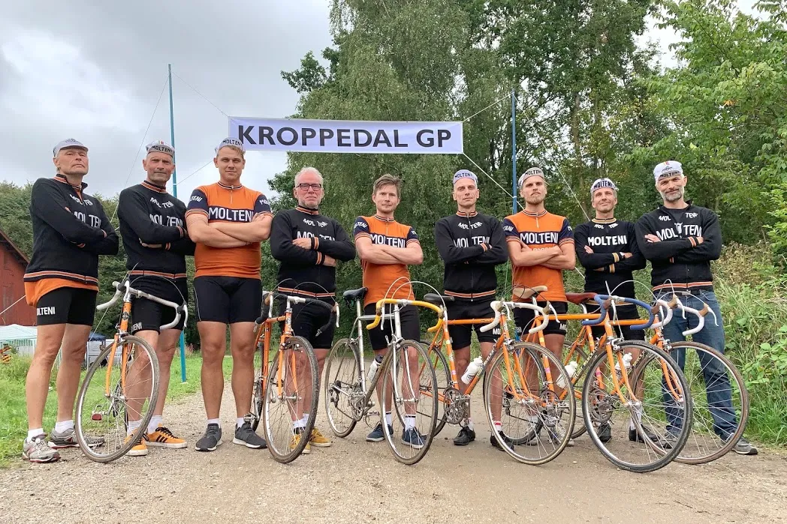

Fuld plade ved Kroppedal Grand Prix

Squadra Molteni ryddede podiet ved vintageløbet Kroppedal Grand Prix. Mark Pedersen kørte en sikker sejr hjem, mens Jeppe Thiemer og Kaptajn Bjørnsteen tog sig af 2. og 3. pladsen.
Det var et toptrimmet og løbsultent hold på 9 ryttere, der stillede til start ved Kroppedal Grand Prix, og med en klar sejrssikker strategi – på en rute bestående af lige dele vådt grus og varm kolort!
– Vi havde aftalt, at Grane, Jens og Kristian skulle lægge hårdt ud. Og det gjorde de til perfektion, fortæller Mark Pedersen.
Efter første omgang var feltet sprængt og Kristian, Mark, Jeppe, Bjørnsteen førte et mindre felt an. Jørn Nielsen (Team K-Werk) lå med i feltet og så stærk ud. Derfor måtte der laves en klassisk manøvre…

– Efter målbakken på 3. omgang rykkede Mark og Jeppe. Samtidig slog jeg ud – og så havde de to et hul på 10 meter, fortæller Kaptajn Bjørnsteen.
De næste 5 omgange trak Jørn som besat – og jeg skulle selvfølgelig ingen steder.
Længere nede i feltet bakkede resten af holdet af, og det blev tydeligere og tydeligere, at Squadra Molteni havde podiets 3 pladser indenfor rækkevide.
– Jeg har måske fået lidt for meget højdetræning og Corona – så derfor derfor fik Mark lov til at køre afsted med ca 3 omgange igen, fortæller Jeppe Thiemer, der havde en podieplads ved Kroppedal som et af sine sæsonmål.
Og for 4. gang i træk kunne Mark Pedersen krydse målstregen som suveræn vinder. Lidt efter kunne Jeppe Thimer køre en sikker 2. plads hjem og dermed indfri sit sæsonmål. Og kort efter skulle opgøret om den sidste podieplads stå.
Jørn Nielsen knoklede i forfølgergruppen. En Velopresrytter gav også sit bidrag – og de vidste begge to, at Kaptajn Bjørnsteen ikke kunne være med til at køre mine holdkammerater ind. Men havde Jørn og Velopressrytteren nok i benene til at slå Bjørnsteen spurten op af målbakken?
– Svaret var nej! Målbakken er en perfekt bakke for mig. Ikke for stejl og tilpas lang – så da jeg rykkede i 53-21 midt på bakken, kunne jeg hurtigt fornemme, at 3. pladsen var i hus. Men stor cadeau til Jørn, lyder det fra Bjørnsteen


Kroppedal Grand Prix var endnu engang en stor succes. Ikke kun for Molteni. Men for hele vintagecykelmiljøet. Fantastisk setup. Hyggelige omgivelser og god stemning.
We’ll be back!
Foto: Peter Bjerg og Jacob Ingemann